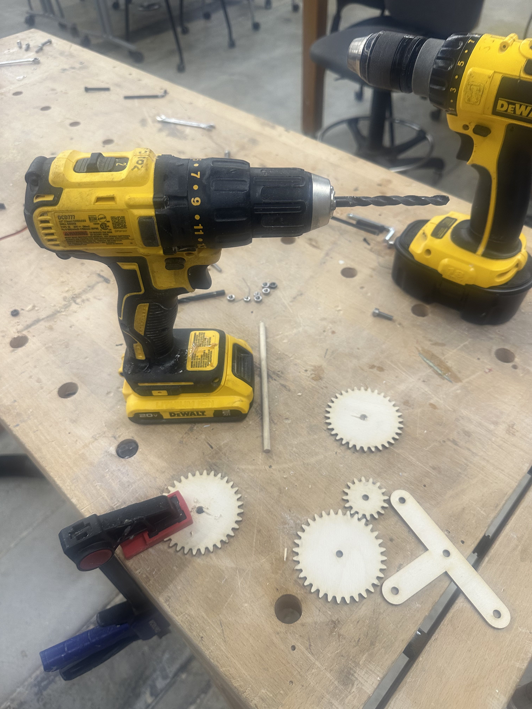

Creating Kinetic Sculpture
For my kinetic sculpture, I wanted to create a planetary gear system with myself at the center. This idea came about during an interaction with my mom who I want to thank for providing the inspiration for my project. One Monday, I was calling my mom (as a good daughter does) and she did not answer my call. This got me thinking what could she possibly be doing. Her only occupation is being my mom (besides her actual job). She responds a few minutes later. I obviously give her a difficult time for not responding immediately. She basically said that the world does not revolve around me. Her claim got me thinking. Are you sure it doesn’t? This project is evidence that it actually does.
CAD Model of Sun and Planet Gears

Here is the first CAD model of my sun and planet gears with its ring. The planet gears have 32 teeth and the sun gear has 16 teeth. I projected these gears to create a sketch and export as a DXF to laser cut.
Laser Cut Sun and Planet Gears

Then, I laser cut each component using cardboard (imported DXF file, measured the width of the cardboard, aligned the z-axis, etc.) Unfortunately, there was friction caused by the cardboard ring which caused the gears to move in a choppy manner. However, this was enough proof of concept that I was able to re-laser cut the components out of wood. This allowed for a seamless gear system.
Drilling Larger Holes in Center of Gears
I must have measured the dowel diameter incorrectly as they did not fit in the middle of my gears. Instead of wasting wood by reprinting perfectly functioning gears, I decided to drill a hole with a slightly larger drill bit to expand the holes.
Painting Gears
Then, I painted all the gears and the outer ring to add a nice pop of color. I laser cut and painted an engraved image of me which will be placed at the center (obviously) on the sun gear. I also laser cut and painted the other components that would be revolving around me on the planet gears which are the earth, saturn, and the sun.
I assembled the gears on the ring, first attaching


I must have measured the dowel diameter incorrectly as they did not fit in the middle of my gears. Instead of wasting wood by reprinting perfectly functioning gears, I decided to drill a hole with a slightly larger drill bit to expand the holes.
Gear System in Action
Here is a video of my gear system with the earth, sun, and saturn revolving around me.